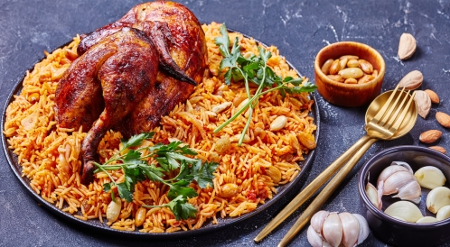

Kabsa is a traditional Saudi dish made with spiced rice and tender chicken.
It is known for its rich flavor and aromatic spices, making it a favorite
across the Arabian Peninsula.

Ingredients
2 cups basmati rice
1 whole chicken (cut into pieces)
2 chopped onions
3 tomatoes (blended)
4 cloves garlic (minced)
2 carrots (grated)
2 tbsp tomato paste
3 tbsp vegetable oil
1 cinnamon stick
4 cardamom pods
4 cloves
1 tsp black pepper
1 tsp turmeric
1 tsp cumin
1 tsp kabsa spice mix (optional)
Salt to taste
Water as needed
Method
Heat oil and sauté onions until golden.
Add garlic and chicken, cook until browned.
Add tomato paste, blended tomatoes, and spices.
Pour water and cook chicken for 25–30 minutes.
Remove chicken and brown it in the oven (optional).
Add washed rice to the pot and adjust salt.
Cook until rice absorbs liquid, then steam for 20 minutes.